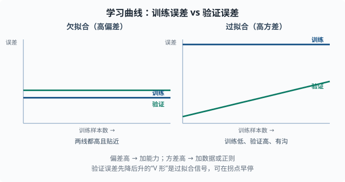
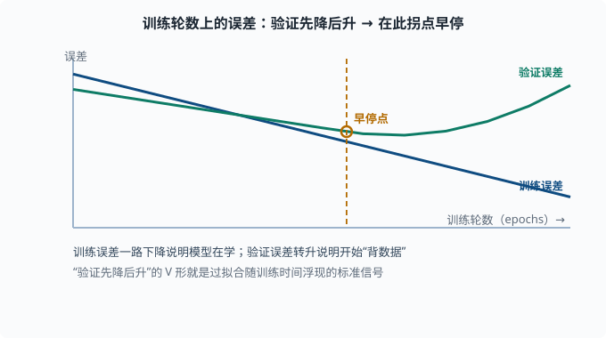

学习曲线与诊断：找到模型卡在哪
目标：把"模型不好"变成一个可定位、可对症的问题。读完这一页，你能用学习曲线判断是欠拟合还是过拟合、识别高偏差或高方差的信号，并按部就班地决定"该加数据、加特征、加复杂度还是加正则"。
为什么需要诊断
模型表现不好时，最常见的第一反应是"换更强的模型"或"狂加数据"——但很多时候是在错误的方向使劲。系统性诊断让你先判断"问题出在偏差还是方差"，再对症下药，省时省力。
一个关键心态：
别问"它为什么不好"，要问"它是在欠拟合还是在过拟合"。这两个判断指向完全不同的对策。
复习：误差拆成偏差和方差
03-04 讲过：
总误差 = 偏差² + 方差 + 噪声
- 偏差太高 → 模型学不动训练数据（欠拟合）。
- 方差太高 → 模型背训练数据、新数据不行（过拟合）。
诊断的目标就是判断当前主要矛盾是偏差还是方差。
学习曲线：一对信号
学习曲线画的是"训练集大小（横轴）"对"训练误差和验证误差（纵轴）"。这是诊断的利器。
欠拟合（高偏差）的特征
训练误差 和 验证误差 都很高，二者曲线接近，几乎贴在一起
即使数据更多，误差也不明显下降
含义：模型太简单，"连训练都学不好"。此时加更多数据通常没用——问题是表达力不足，不是数据不够。
对策：加复杂度（更多特征/更大模型）、减少正则（λ 调小）、必要时换更强的模型。
过拟合（高方差）的特征
训练误差 很低，验证误差 明显更高，两线之间有一条大"沟"
当训练数据增多时，这条沟会缩小
含义：模型"背下了训练数据"，没有泛化。此时加数据通常很有用，因为更多样本让模型难以死记。
对策：加正则、减小模型容量、加数据、或用早停。
关键读法口诀
两线都高且贴得近 → 偏差问题，加能力
训练很低、验证高、两线分得开 → 方差问题，加数据/正则

左图两条曲线都偏高、彼此贴近，是"模型学不动"的高偏差信号；右图训练误差压得很低、验证误差却明显更高、中间留出一道沟，是"背下训练数据"的高方差信号。
误差在"训练轮数"上的变化
除了数据的量，还可以看训练进行中的误差曲线：
- 训练误差持续下降 → 模型在学。
- 验证误差先降后升 → 开始过拟合（这是"早期停止"的依据），应在验证误差拐点停。
这张"验证先降后升"的 V 形，就是过拟合随训练时间浮现的标准信号。

图上蓝线（训练误差）一路下降说明模型在学；绿线（验证误差）一开始也跟着降，到某个点（早停点）后反而掉头向上。那个掉头点就是"开始背数据"的时刻——早停就在这个拐点打住，保住泛化最好的一版模型。
一个更细的排查清单
当模型表现差，按这个顺序排查：
- 先看基线：模型有没有打败最简单的基线？（03-01）
- 看训练误差：训练都学不好 → 欠拟合/偏差问题，去加能力。
- 看验证差距：训练好但验证差 → 过拟合/方差问题，去加正则/数据。
- 检查泄漏：是不是验证/测试信息漏进了训练（03-08）？这是隐藏而致命的。
- 检查数据质量：标签错了吗？重复样本？该清洗了（03-08）。
- 检查评估是否合理：是不是指标选错了（03-05）？类别不平衡？阈值不对？
flowchart TB
A["模型表现差"] --> B["赢了基线吗？"]
B -->|"没有"| F["先修基线：特征/数据/模型写错？"]
B -->|"有"| C["训练误差高吗？"]
C -->|"是"| D["高偏差：加能力"]
C -->|"否"| E["验证误差高吗？"]
E -->|"是"| G["高方差：加数据 / 正则"]
E -->|"否"| H["检查泄漏 / 数据质量 / 指标"]
诊断的价值在于按证据分支：每一步都用一个信号把候选方向砍掉一半。
动手：画出学习曲线
import numpy as np
from sklearn.model_selection import learning_curve, train_test_split
from sklearn.ensemble import RandomForestRegressor
from sklearn.metrics import mean_squared_error
# 生成非线性数据
rng = np.random.default_rng(0)
x = rng.uniform(-4, 4, size=400)
X = x.reshape(-1, 1)
y = np.sin(x) + rng.normal(0, 0.3, size=400)
# 用很简单的模型 → 大概率欠拟合（偏差）
model = RandomForestRegressor(n_estimators=50, max_depth=2, random_state=0)
train_sizes, train_scores, val_scores = learning_curve(
model, X, y, train_sizes=np.linspace(0.1, 1.0, 8),
cv=3, scoring="neg_mean_squared_error")
train_mse = -train_scores.mean(axis=1)
val_mse = -val_scores.mean(axis=1)
for size, te, ve in zip(train_sizes, train_mse, val_mse):
print(f"样本数 {size:4d}: 训练MSE {te:.3f} 验证MSE {ve:.3f}")
你会看到"很深/很浅的树"产生不同的两线形态：浅树两线都高（偏差），深树训练很低验证高（方差）。把两行结果对比，就能直观读出偏差与方差。
决策速查表
| 症状 | 判断 | 对症 |
|---|---|---|
| 训练高、验证高、两线贴近 | 高偏差 | 加能力/去正则/换强模型 |
| 训练低、验证高、沟大 | 高方差 | 加数据/加正则/减容量 |
| 两个都还行但仍不满意 | 已到模型与数据上限 | 换思路、加有用特征、换数据 |
| 验证泄漏 | 微妙的错判 | 修管道，重新评估 |
思考题
- 欠拟合的学习曲线长什么样？为什么此时加数据通常没用？
- 过拟合的学习曲线长什么样？加数据为什么有用？
- 训练误差低、验证误差也低但仍不满足业务要求，问题可能在哪？
- 为什么第一步要先跟基线比？
参考答案
- 训练误差和验证误差都高且彼此贴近，几乎不随数据增多而下降。此时模型连训练都学不好，说明是表达能力不足（偏差问题），加数据无法弥补，应加复杂度或去正则。
- 训练误差很低而验证误差明显更高，两线之间有明显"沟"，且随数据增多沟变窄。此时模型在背训练数据，更多样本让它难以死记、被迫学到可泛化规律，所以加数据有效。
- 可能：模型和数据的表达已达上限，此时需要注入新信息——更有用的特征、更好的数据、或换一个更贴合的模型与损失；也可能是业务指标与当前评估指标不完全一致，需要重新审视评估是否量对了真实代价。
- 因为基线是"空手也能做到"的下限。不与基线比，你无法知道"看似不低的指标"其实只是运气或类别不平衡造成的虚高（如 03-05 里"永远判多数类"）。基线让你判断模型是否真的带来增益。
下一步
- 想在深度学习里用同一套诊断 → 04 深度学习 的训练曲线、早停、正则。
- 想补正则化的数学 → 03-04 偏差-方差与正则化。
- 想系统评估 LLM/agent → 07 LLM 工程。